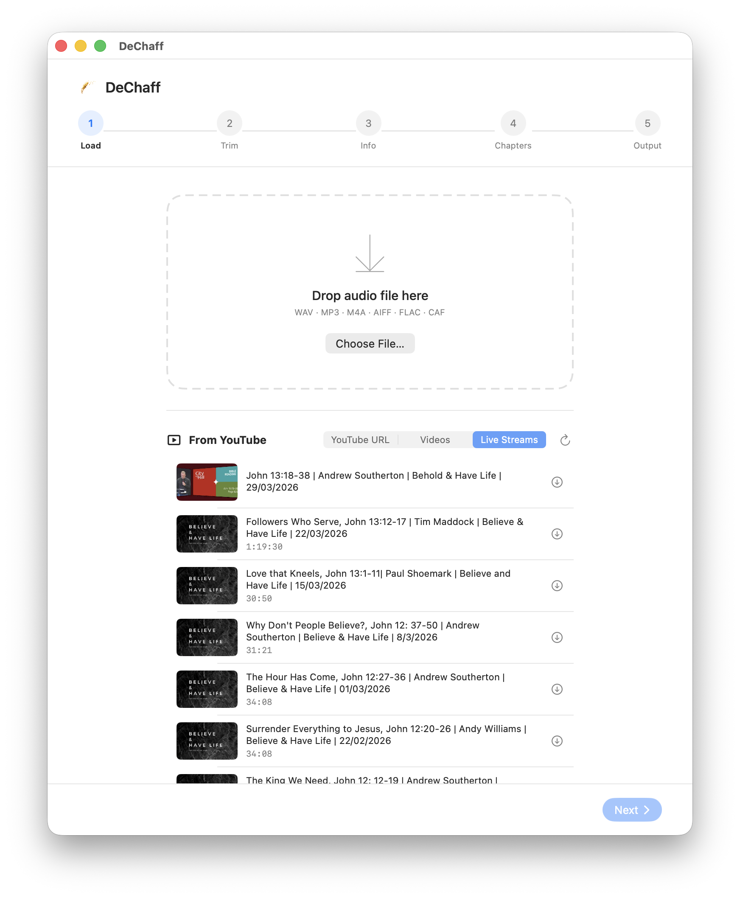
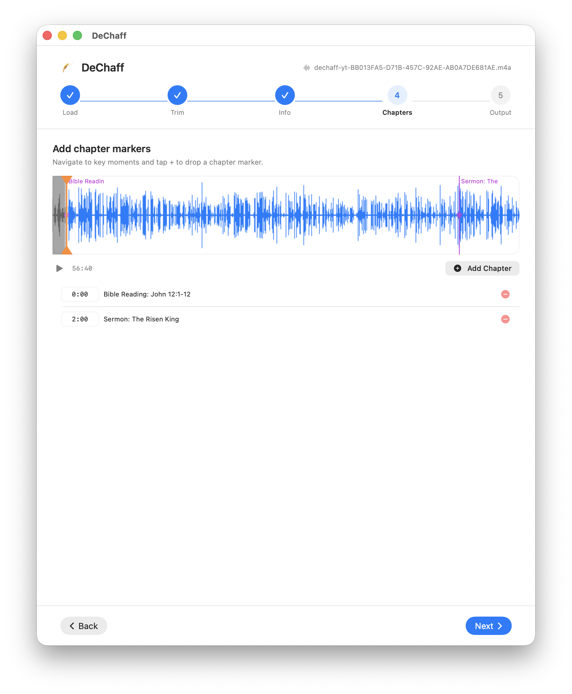
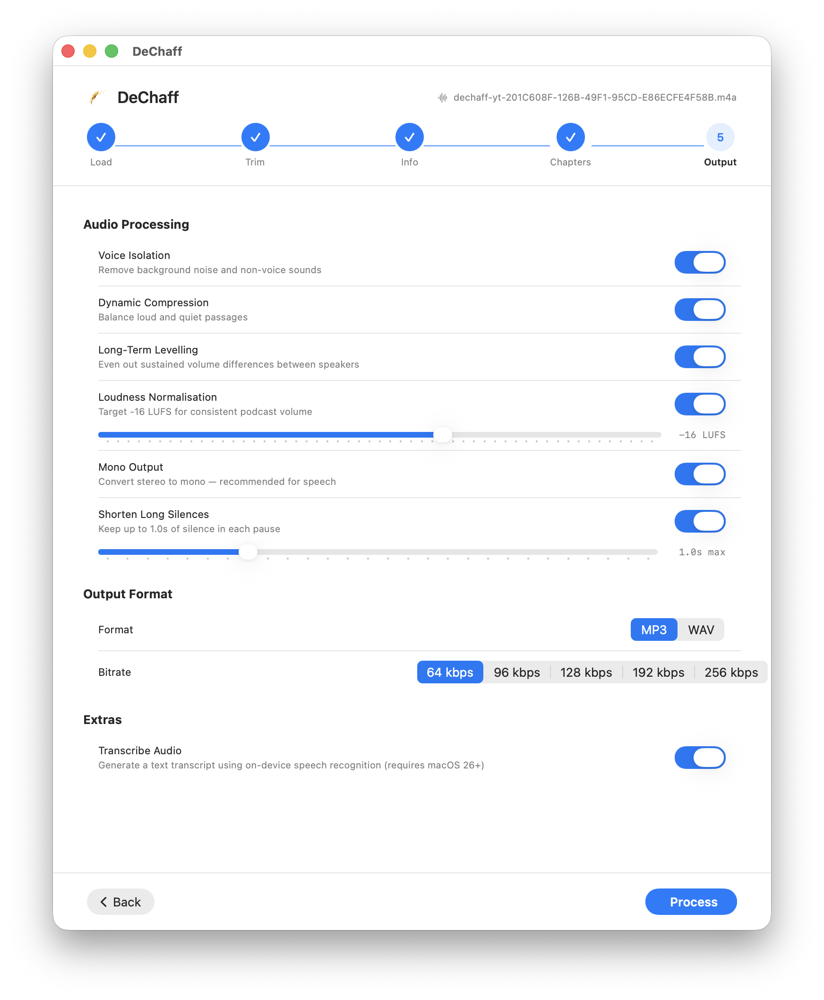

Requires macOS 26 or later · Free, no account needed

Load from file or YouTube browser

Waveform editor with chapter markers

Processing options and one-click export
How it works
Five steps to a finished episode
DeChaff guides you through a simple wizard. No audio engineering knowledge required.
1
Load
Drop a recording or pick a video from the built-in YouTube browser. AI fills in the sermon details automatically.
2
Trim
Drag the orange handles to cut pre-service noise and dead air. Zoom in for precision with scroll-to-zoom.
3
Info
Review the sermon title, Bible reading, preacher, series, date, and cover art — already filled in when loaded from YouTube.
4
Chapters
Navigate to key moments and tap + to drop a chapter marker. Drag markers to fine-tune. Podcast apps show these as chapters.
5
Process
Hit Process. DeChaff cleans the audio, normalises loudness, encodes MP3, and embeds all tags automatically.
Features
Everything a church AV team needs
Built by volunteers for volunteers — no complex settings to learn.
Voice Isolation
Apple's built-in voice isolation engine strips background noise, room reverb, and crowd sounds — leaving only the speaker's voice.
Loudness Normalisation
Targets −16 LUFS (EBU R128) with dynamic compression and a soft limiter — consistent podcast volume every time.
YouTube Browser
Browse your church's YouTube channel and download audio with one click. yt-dlp is bundled and updated automatically.
AI Metadata Extraction
Uses on-device Apple Intelligence to parse YouTube titles into sermon title, Bible reading, preacher, and series — before the download even finishes.
AI Assistant
Optionally sends the transcript to Claude after processing to draft a podcast episode title, description, and key themes. Powered by the Anthropic API.
Chapter Markers
Drop chapter markers on the waveform at Bible reading, sermon, and other key moments. Embedded as ID3 CTOC/CHAP frames — compatible with all major podcast apps.
On-Device Transcription
Generates a full text transcript using macOS speech recognition — entirely on-device, no data sent anywhere.
Waveform Editor
Multi-resolution tiled waveform with scroll-to-zoom anchored on your cursor. Pan by scrolling horizontally or dragging. Double-tap to reset.
Customisable Templates
Tell DeChaff how your church formats YouTube titles so AI extraction works correctly. Customise the output filename format too — with a live preview.
Apple Shortcuts Action
A built-in Download & Open in DeChaff action lets you trigger downloads from any Shortcuts workflow — or just say "Download sermon in DeChaff" to Siri.
Safari Share Extension
Share any YouTube page directly to DeChaff from Safari's share menu — no copy-pasting URLs. Works with any site supported by yt-dlp.
Automatic Updates
DeChaff checks for updates in the background and prompts you when a new version is available — no manual downloads needed.
Powered by AI
Metadata fills itself in
From YouTube title to fully-tagged podcast episode — without typing a word.
On-device Apple Intelligence Tier 1
Uses FoundationModels on-device — private, instant, no API key needed.
Claude API fallback Tier 2
If Apple Intelligence isn't available, falls back to Anthropic's Claude API with your key.
Built-in text parsing Tier 3
A template-aware parser handles common formats even without any AI model.
Your format, your rules
Set your church's title format once in Settings so every extraction is accurate.
Auto-extracted from YouTube title
Sermon TitleThe Good Shepherd
Bible ReadingJohn 10:1–18
PreacherRev. James Hart
SeriesFoundations
Date6 Apr 2026
Output filename
2026-04-06 The Good Shepherd, John 10:1–18 | Rev. James Hart | Foundations.mp3
Keyboard shortcuts
Built for keyboard-first workflows
Every step of the editing process has a keyboard shortcut — stay in the flow.